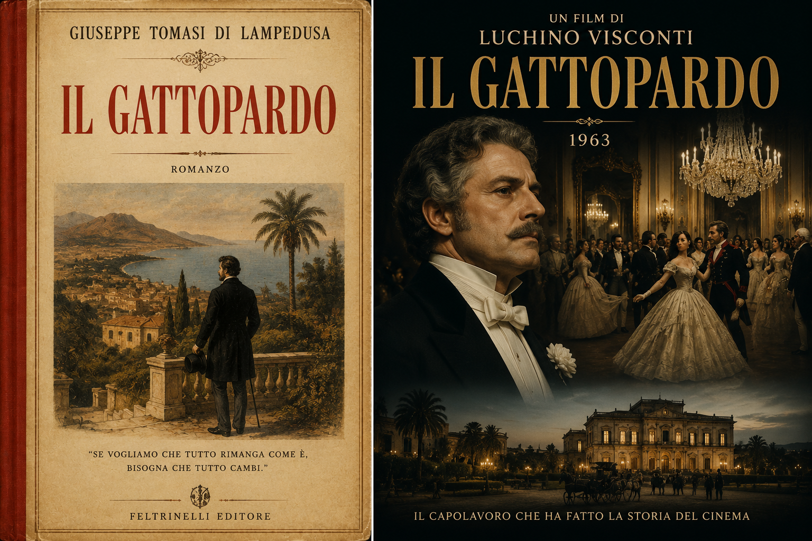
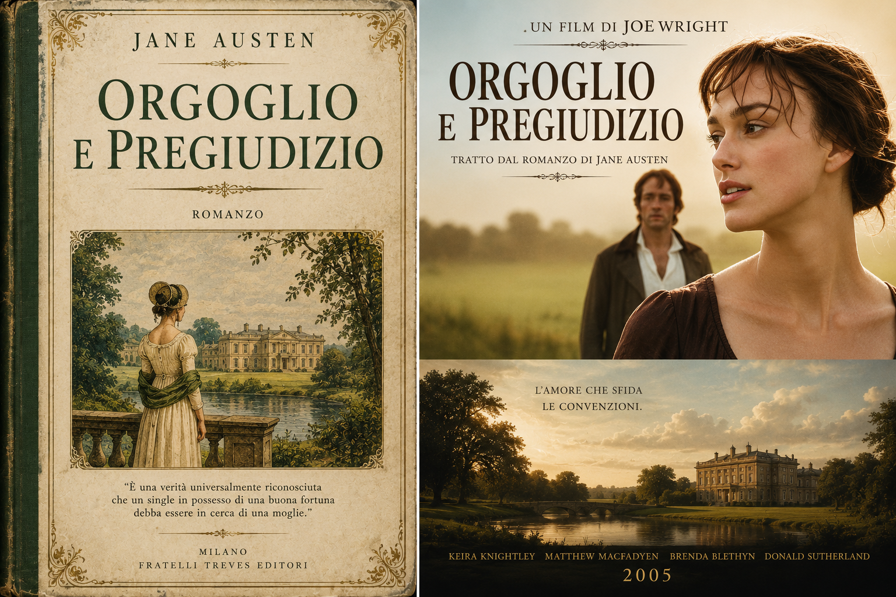
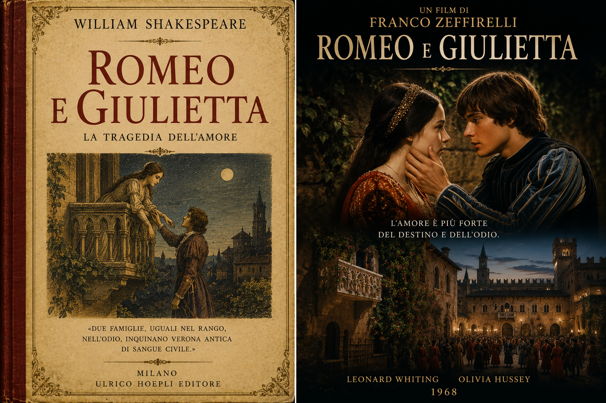
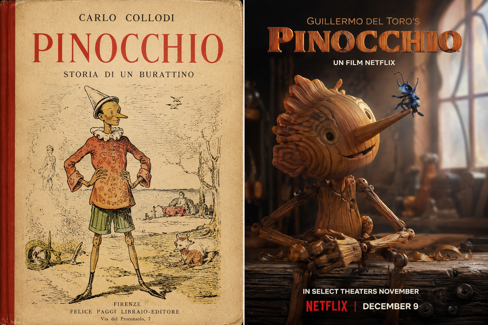
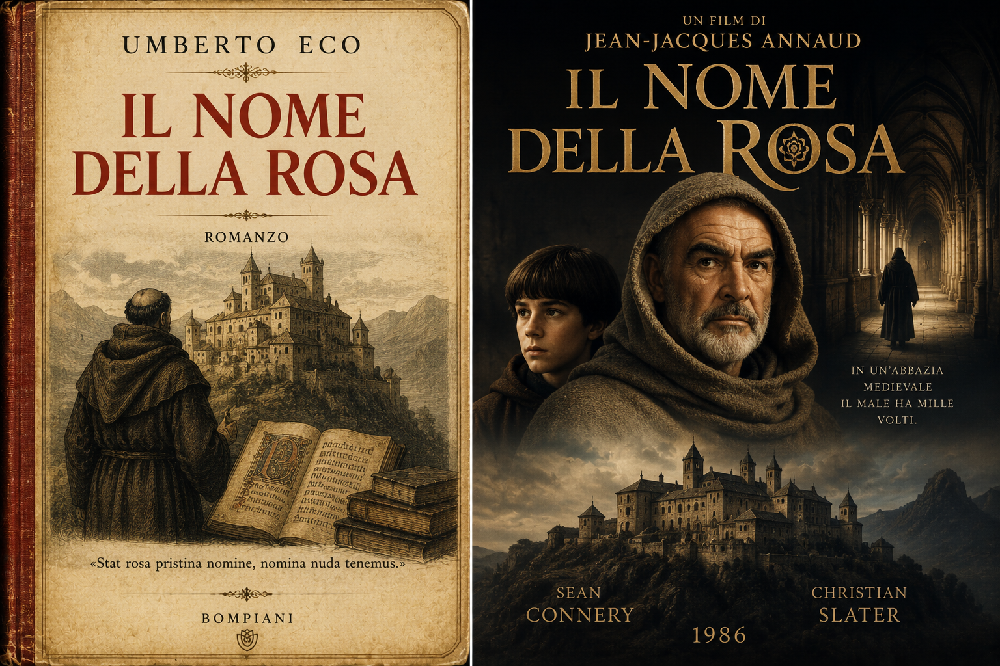
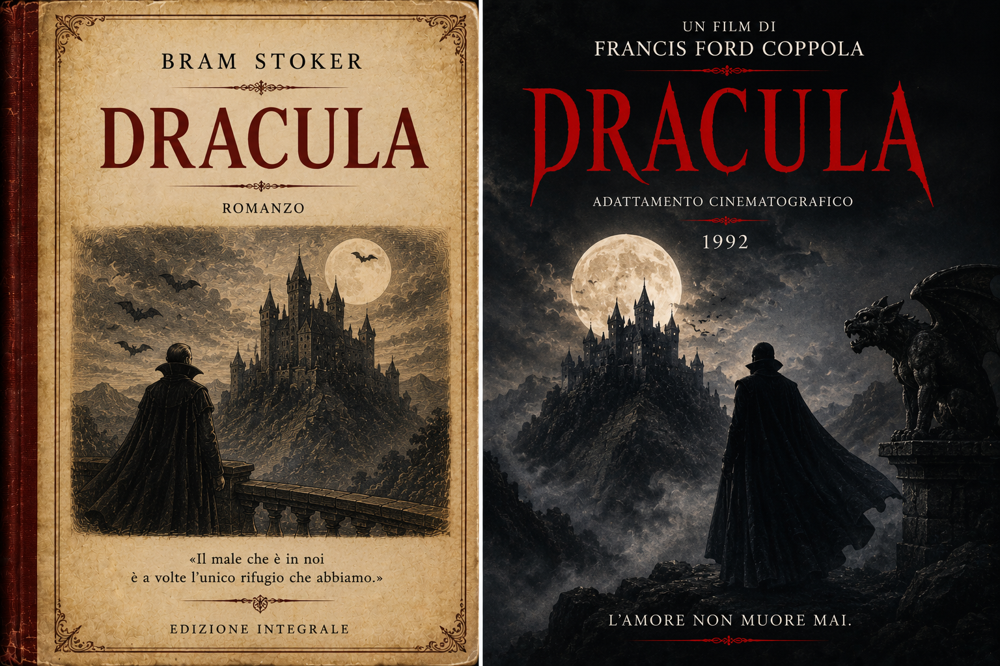
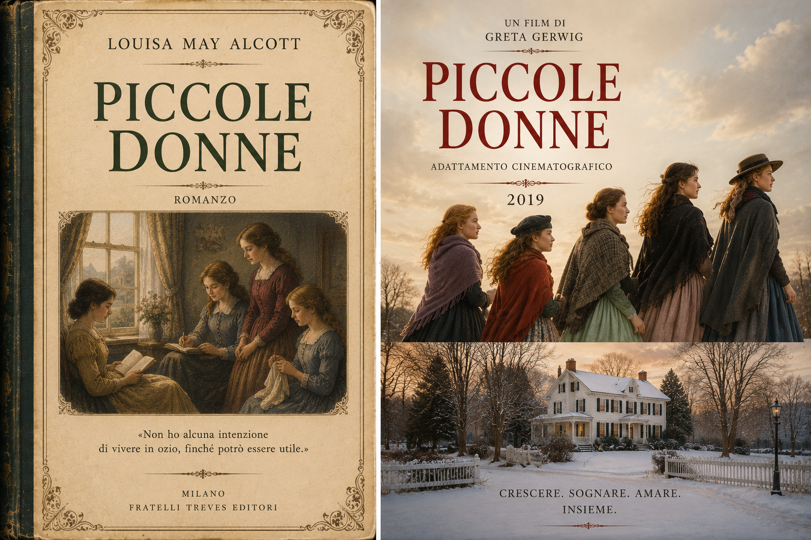
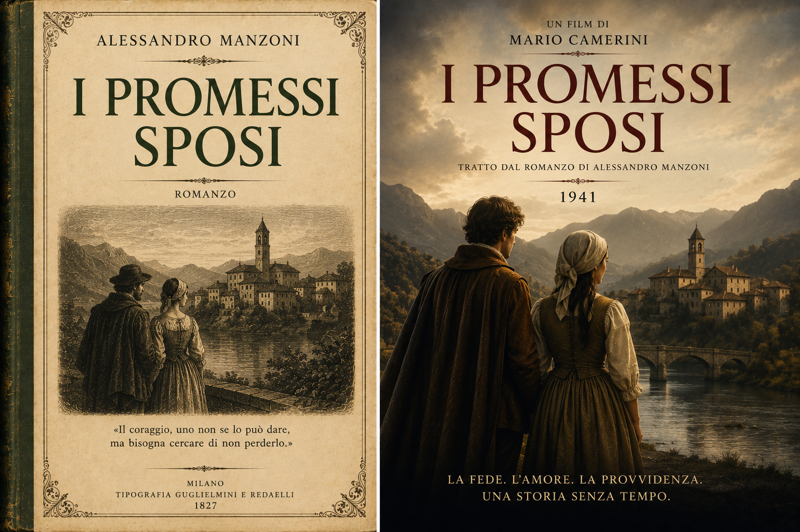

Il Gattopardo
Romanzo di Giuseppe Tomasi di Lampedusa, adattato al cinema da Luchino Visconti.
Apri schedaUna selezione di opere letterarie e dei loro adattamenti cinematografici.
Il catalogo raccoglie opere letterarie e trasposizioni audiovisive.

Romanzo di Giuseppe Tomasi di Lampedusa, adattato al cinema da Luchino Visconti.
Apri scheda
Romanzo di Jane Austen, reinterpretato nella versione cinematografica di Joe Wright.
Apri scheda
Tragedia di William Shakespeare, adattata al cinema da Franco Zeffirelli.
Apri scheda
Romanzo di Carlo Collodi, più volte adattato in film d'animazione e produzioni cinematografiche, come da Guillermo del Toro.
Apri scheda
Romanzo di Umberto Eco, adattato al cinema da Jean-Jacques Annaud nel 1986.
Apri scheda
Romanzo gotico di Bram Stoker, alla base di numerosi adattamenti cinematografici, come quello di Francis Ford Coppola.
Apri scheda
Romanzo di Louisa May Alcott, adattato in diverse versioni cinematografiche.
Apri schedaRomanzo di Mary Shelley, reinterpretato più volte dal cinema horror e fantastico.
Apri scheda
Romanzo di Alessandro Manzoni, oggetto di adattamenti televisivi e audiovisivi. Il primo di Mario Camerini.
Apri scheda